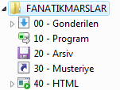
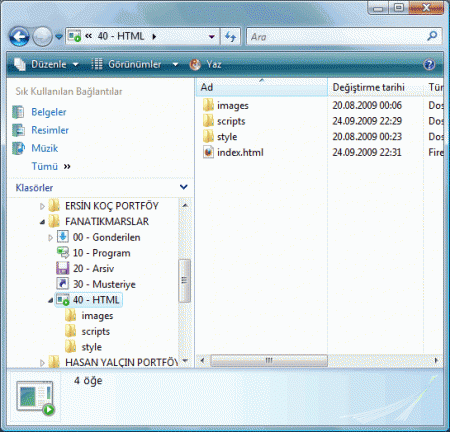
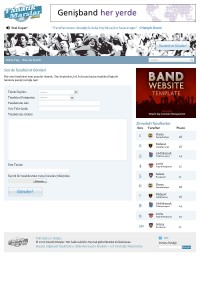
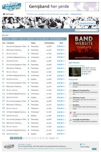
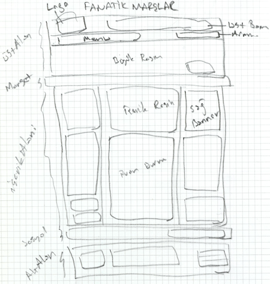

Yaptığım bir projeyi baştan sonra anlatmak uzun süredir düşündüğüm ama yapamadığım bir işti. Son denememde direkten döndü bu sefer inşallah tamamına erdireceğiz.
Fanatik Marşlar Nedir?
Fanatik Marşlar, taraftar marşlarının toplantığı tüm fanatiklerin buluşma noktasıdır. Barlarda, sahalarda, tirübünlerde, maç yolunda otobüslerde, trenlerde, salonlarda, stadyumlarda kısacası taraftarların her yerde söylediği tezahüratları bulabileceğiniz, sizin de takımınız için marşınızı paylaşabileceğiniz bir taraftar sitesidir.
[Ayrıca Mustafa'nın siteyi tanıttığı televidyon'daki etohum programınıda izleminizi][] öneririm.
Bu projede Mustafa Özyurt ve Hasan Yalçın ile birilikte çalıştım. İki arkadaşımada teşekkürlerimi sunarak yazıma başlıyorum. Mustafa Özyurt hem projenin sahibi, hemde programlamasını yaptı. Tasarımlarda sevgili dostum Hasan Yalçın'a ait. Bende html, css ve javascript kodunu yazdım.
Yazının biraz uzun olacağı ve derlemesi zaman alacağı için makaleyi üçe böldüm
- I -Kodlama Öncesi Hazırlıklar
- II - Ana Sayfa Kodlaması
- III - Alt Sayfaların Kodlaması
I - Kodlama Öncesi Hazırlıklar
Projelere başlamadan önce tüm projelerde kullandığım klasör yapısını sizlerle paylaşmak isterim. İkonlar Windows Vista'nın kütüphanesinden, farklı ikonlar olabilirdi ama o zaman farklı bilgisayarlara o ikonları taşımak gerekiyor. İkon kullanmanın avantajı seçmek daha kolay oluyor. Her klasör isminden önce rakamlar koymamın nedeni sıralamayı istediğim gibi yapmak. Klasör ismi verirken Türkçe karakter kullanmamaya dikkat ediyoruz. Gerçi dosyalara, klasörlere isim verirken Türkçe kullanmayacağımızı biliyoruz.

00 - Gonderilen: Bu klasöre proje için gönderilen dosyaları koyuyorum. Projenin şablon psd'leri, içerik dokümanları(doc), resimler (jpeg, gif, png vd.), projede geçen yazı tiplerini(ttf) bu klasöre koyuyorum.
10 - Program: Bu kısma eskiden projede yazdığım program kodlarını koyuyordum. Son zamanlarda pek program yazmıyorum genelde css, xhtml ve javascript kısmını yapıyorum projelerin. Bu klasörü şimdilerde kullandığım eklentileri koymak için kullanıyorum. Örneğin akordiyon eklentisi, lightbox eklentisi, galeri eklentisi vb.
20 - Arsiv: Arşiv kısmında proje adımlarını belli aralıklarla arşivleyerek bu klasöre koyuyorum. Ayrıca devamlı güncelleme yaptığım projelerde güncellediğim her sayfa veya dokümanın yedeğini alıp bu klasöre koyuyorum. Bu mesleği iş olarak edinmek isteyen herkes yedek almayı bir görev bilmeli kendine. Yedeksiz çalışmanın bedeli çok ağır sonuçlar doğura bilir.
30 - Musteriye: Müşteriye klasörünü yaptığım projenin, işin, güncellemenin son dosyalarının sıkıştırılmış hallerini koyuyorum. Böylelikle çalıştığım ve müşteriye gönderdiğim dosyaların ayrımını daha kolay yapabiliyorum. Devamlı güncelleme yaptığım sitelerde bu klasörü daha yoğun kullanıyorum.
40 - HTML:Projede çalıştığım dosyaları bu klasöre koyuyorum. html, css, javascript, resimler ve flash dosyaları. Bu klasör içinde de bir düzenim var.
images: resimleri(jpeg, gif ve png) ve flash dosyalarını(.swf) buraya koyuyorum.
scripts: javascript dosyalarını(.js) buraya koyuyorum.
style: css dosyalarımı buraya koyuyorum.
html dosyalarıda HTML klasörü içinde kalıyor.
Bu genel proje standardım. Bazı projelerde bu klasör yapısı değişik olabiliyor. Mesela resim galerisinin olduğu sitelerde images/galeri/ klasörü açıp resimleri onun içine koyuyorum. Xml'leri yoğun olarak kullandığım projelerde bunlara ek olarak /xml/ klasörü oluşturuyorum. Flash yoğunluklu projelerde /swf/ klasörü açıyorum. Yani projeden proje farklılıklar gösterebiliyor, ama standardım bu.

Buraya kadar anlattıklarım hazır klasör yapısıdır, bundan sonra projeyi kodlamaya başlamadan önceki hazırlıklar olacak.
 
1- İlk olarak tüm psd'leri kontrol ederek hangi bölümlerin tüm sayfalarda aynı olduğu belirleyip ona göre kodlama yapmayı düşünüyorum. Genel bir değerlendirme bakışıda diyebiliriz buna.
2- İkinci olarak genel yapıyı görebileceğimiz bir eskiz çiziyoruz. Çizim her zaman bize neyin nasıl olacağı ve hangi alanlarda hangi teknikleri kullanacağımızı göstermesi bakımından önemlidir.

Her ne kadar sanal dünyada çalışıyor olsak da gerçek çizimler bize yardımcı olacaktır.
3- Eskizini çıkardığımız bu yapıyı sırası ile kodlamaya başlayacağız. İlk olarak boş bir html sayfası açıp index.html adı ile kaydederiz. Sonra boş bir css dosyası açarız. Aslında ilk açtığım bu boş dokümanlar bile bir şeyler içerir.
XHTML sayfamız
<!DOCTYPE html PUBLIC "-//W3C//DTD XHTML 1.0 Strict//EN" "http://www.w3.org/TR/xhtml1/DTD/xhtml1-strict.dtd"> <html xmlns="http://www.w3.org/1999/xhtml"> <head> <meta http-equiv="Content-Type" content="text/html; charset=utf-8" /> <title>FanatikMarşlar.Com</title> </head> <body> </body> </html>
Bu dokümanı Adobe DreamWeaver ile oluşturduğumda dw benim için oluşturuyor.
- DocType olarak xhtml-strict kullanıyoruz. Doküman tipleri hakkında ayrıntılı bil için tıklayınız.
- Karakter kodumuz utf-8. uft-8 seçimi bizim karakter kodu konusunda sorunsuz çalışmamız için önemlidir. Ayrıntılı bilgi için tıklayınız.
- Genel html kodları (html, head ve body)
İlk yaptığım iş başlık kısmını değiştirmek olur.
<title>FanatikMarşlar.Com</title>
Daha sonra boş bir css dokümanı oluştururum. Genelde isim verirken ana, main, iskelet, veya sirket_adi nokta css şeklinde tanımlarım bu seferde site ismini tanımlıyorum fanatikmarslar.css Oluşturduğum bu dokümana sırası ile imza alanımı ve sıfırlama kodlarını ekliyorum.
/************************ ************************ Fanatik Marşlar - http://fanatikmarslar.com/ fatih hayrioglu 24 Eylul 2009 ie6, ff, opera, chrome, safari ************************ ************************/
Bunu benim imzam olarak nitelendirebilirsiniz. Genelde tüm projelerime eklerim. Bazılarında unuttuğumda oluyor. Daha sonra css sıfırlama kodlarını ekleyelim. Ben genelde standart sıfırlama tekniklerini kullanmam kendi ufak bir iki tekniğim vardır onları yazar geçerim. Ama bu sefer bazı sıfırlama kodlarının elenmiş halini kullandım ve koduma ekledim. Bide kapsayamama sorunu kodunu ekledim.
/* Css Sifirlama */ html, body, div, span, applet, object, iframe, h1, h2, h3, h4, h5, h6, p, blockquote, pre, a, abbr, acronym, address, big, cite, code, del, dfn, em, font, img, ins, kbd, q, s, samp, small, strike, strong, sub, sup, tt, var, b, u, i, center, dl, dt, dd, ol, ul, li, fieldset, form, label, legend, table, caption, tbody, tfoot, thead, tr, th, td {margin: 0; padding: 0; border: 0; outline: 0; font-size: 100%; text-decoration:none;} body { line-height: 1; } ol, ul { list-style: none; } blockquote, q { quotes: none; } /* remember to define focus styles! */ :focus, a:focus, a:active{ outline: 0; } /* remember to highlight inserts somehow! */ ins{ text-decoration: none; } del{ text-decoration: line-through; } /* tables still need 'cellspacing="0"' in the markup */ table{border-collapse: collapse; border-spacing: 0;} /* float uygulanan elemanları kapsayamama sorunu */ .kapsayamamaSorunu:after {content: "."; display: block; height: 0; clear: both; visibility: hidden;} .kapsayamamaSorunu {display: inline-block;} /* IE-mac de bu bolumu sakla \ */ * html .kapsayamamaSorunu {height: 1%;} .kapsayamamaSorunu {display: block;} /* IE-mac bu bolumu saklam artik */ /* Css Sifirlama */
CSS sıfırlama tekniğini kısaca açıklarsak; Farklı tarayıcılarda farklı şekillerde yorumlanan html elemanlarının özelliklerini her tarayıcıda aynı görünmesini sağlayacak kodlara sıfırlama denir. Bu sayede her tarayıcıda bu elemanlar aynı sıfır noktasına gelecektir. Örneğin p{margin:0; padding:0}
Daha sonra xhtml sayfamıza css kodumuzu ekleyelim.
<style type="text/css"> <!-- @import url("style/fanatikmarslar.css"); --> </style>
Bundan sonra genelde ben psd'yi açıp sırası ile eskizde çizdiğim yapıya uygun olarak kodlamama başlarım. Bunun dışında bir yöntem daha vardır ki ben genelde bu yönteme başvurmuyorum. Genel sayfa yapısını içeren kısımlar(üst alan, promo alanı, içerik alanı alt alan vb.) kodlanır ve içleri doldurulur. Dediğim gibi ben psd yi açarak sırası ile kodlamaya başlarım.
Tasarımlara bakınca site genel olarak anasayfadaki üç kolonlu yapı ve alt sayfadaki iki kolonlu yapı olarak ikiye ayrılıyor. Ana Sayfa kodlaması ile başlayalım
Bir sonraki makalede kaldığımız yerden devam edeceğiz.
]: /images/ders_01.gif
Yorumlar !